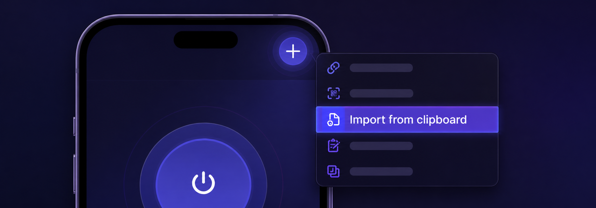

BLACK TUNNEL
Нет Happ?
Скачайте приложение по ссылкам ниже.
Happ Lite доступен в российском App Store.
Не видно Happ в App Store?
Смените регион Apple Account на США, затем откройте ссылку App Store ещё раз.
- iPhone / iPad: Настройки → ваше имя → «Медиаматериалы и покупки» → «Просмотреть» → «Страна/регион» → «Изменить страну или регион» → United States.
- Mac: App Store → имя внизу боковой панели → «Настройки учётной записи» → «Изменить страну или регион» → United States.
- Перед сменой региона может понадобиться отменить подписки, потратить остаток баланса и указать платёжные данные и адрес для нового региона.
Если открылась форма оплаты: выберите None, если этот вариант доступен. Тогда не заполняйте номер карты, срок действия и CVV. Если варианта None нет, Apple требует действительный способ оплаты и платёжный адрес, принадлежащие вам; вымышленные данные или чужую карту использовать нельзя.
После установки Happ добавьте подписку — всё остальное настроится автоматически.
Добавить в Happ Скопировать ссылку подпискиЕсли у вас iPhone и установлен Happ Lite из российского App Store, добавьте правила роутинга вручную: скопируйте правила, в Happ Lite нажмите «+» и при добавлении выберите профиль Black Tunnel.
Скопировать правила роутингаЕсли правила роутинга не скопировались при установке, добавьте их сейчас: скопируйте правила, в Happ нажмите «+» и при добавлении выберите профиль Black Tunnel.

- Нажмите «Скопировать ссылку подписки».
- Откройте Happ и нажмите «+» в правом верхнем углу.
- Выберите Import from clipboard.
- Выберите подписку и подтвердите профиль BLACK TUNNEL.